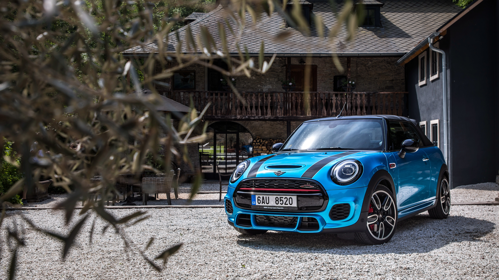

MINI
Motor1.5 l TwinPower Turbo Putere136 CP 0-100 km/h8.2 s Consum5.9 L/100 km Lungime3.85 m Portbagaj211 L
MINI Cooper
MINI Cooper este un hatchback urban compact, agil și ideal pentru viața modernă din oraș.
Caracteristici cheie
Aspect iconc și personalizări colorate.
Direcție precisă și suspensie adaptată.
Conectivitate Apple CarPlay și MINI Connected.
Dimensiuni ideale pentru oraș.